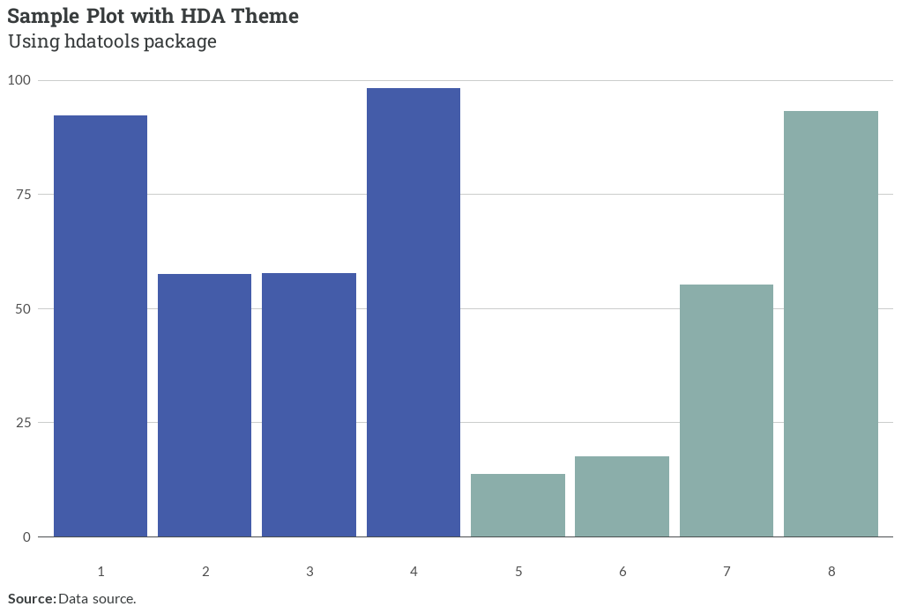

The hdatools package provides a set of functions and tools for data analysis and visualization.
Installation
# install.packages("devtools")
devtools::install_github("hdadvisors/hdatools")hdatools bundles the Lato, Roboto Slab, Open Sans, Poppins, and Noto Sans faces used by its themes and registers them offline the first time the package loads — no network request, no per-session Google Fonts download. To skip registration (for example, to supply your own font setup), set options(hdatools.fonts = FALSE) or the environment variable HDATOOLS_NO_FONTS before loading the package.
Features
Themes
-
theme_hda(): HDAdvisors-branded ggplot2 theme -
theme_hfv(): HousingForward Virginia-branded ggplot2 theme -
theme_pha(): PHA-branded ggplot2 theme
Under ggplot2 >= 4.0, override a theme’s strip.text (e.g. for faceted plots) with ggtext::element_markdown(), never a raw ggplot2::element_text() — the themes’ own strip element is a ggtext markdown element, and ggplot2 4.0 only merges theme elements of the same class.
Color Scales
-
scale_color_hda()/scale_colour_hda(),scale_fill_hda(): HDA-branded discrete color scales -
scale_color_hfv()/scale_colour_hfv(),scale_fill_hfv(): HFV-branded discrete color scales -
scale_color_pha()/scale_colour_pha(),scale_fill_pha(): PHA-branded discrete color scales -
scale_color_gradient_hda()/scale_colour_gradient_hda(): HDA-branded continuous color scale (deprecated, usescale_color_hda_c()) -
scale_color_gradient_pha()/scale_colour_gradient_pha(),scale_fill_gradient_pha(): PHA-branded continuous color scales (deprecated, usescale_color_pha_c()/scale_fill_pha_c())
Continuous ramp scales
Six colorspace HCL sequential/diverging ramps (one pair per brand), tuned and CVD-checked in the Ramp Lab review. HDA’s diverging ramp is provisional (see NEWS.md).
-
scale_color_hda_c()/scale_colour_hda_c(),scale_fill_hda_c(): HDA-branded continuous color/fill scales -
scale_color_hfv_c()/scale_colour_hfv_c(),scale_fill_hfv_c(): HFV-branded continuous color/fill scales -
scale_color_pha_c()/scale_colour_pha_c(),scale_fill_pha_c(): PHA-branded continuous color/fill scales -
scale_color_hda_b()/scale_colour_hda_b(),scale_fill_hda_b(): HDA-branded binned color/fill scales (7 classes by default) -
scale_color_hfv_b()/scale_colour_hfv_b(),scale_fill_hfv_b(): HFV-branded binned color/fill scales (7 classes by default) -
scale_color_pha_b()/scale_colour_pha_b(),scale_fill_pha_b(): PHA-branded binned color/fill scales (7 classes by default)
Each takes palette = c("sequential", "diverging") to choose the ramp.
Utility Functions
-
add_reliability(): Add reliability labels based on coefficient of variation -
fct_case_when(): Create a factor with case_when logic and automatic level ordering -
markdown_wrap_gen(): Generate a function to wrap and format facet labels with markdown -
add_zero_line(): Add darker line to zero intercept -
flip_gridlines(): Flip major gridlines from horizontal to vertical -
publish_plot(): Create dynamic graphic from plot object when document rendered as HTML -
get_logo(): Get an HDA/HFV logo<img>tag for use in a plot -
get_output_format(): Detect the current output format (studio, HTML, or PDF) -
adjust_base_size(): Adjust a base font size for the detected output format -
register_hda_fonts(): Register hdatools’ bundled fonts (called automatically on load)
Usage
Basic example:
library(hdatools)
library(tidyverse)
# Create a sample dataset
data <- data.frame(
x = as.character(c(1:8)),
y = runif(8, 0, 100),
group = rep(c("A", "B"), each = 4)
)
# Create a plot with HDA theme and colors
ggplot(data, aes(x, y, fill = group)) +
geom_col(position = "dodge") +
scale_fill_hda() +
add_zero_line() +
theme_hda() +
labs(title = "Sample Plot with HDA Theme",
subtitle = "Using *hdatools* package",
caption = "**Source:** Data source.")
# Add reliability labels to a dataset, naming the CV column (percent scale)
data_with_reliability <- data |>
mutate(cv = runif(8, 0, 50)) |>
add_reliability(cv_col = cv)
# Legacy path: auto-detects a single column ending in "_cv" (0-1 proportion)
data_with_legacy_cv <- data |>
mutate(value_cv = runif(8, 0, 0.5)) |>
add_reliability()
# Create a factor with custom ordering
data_with_factor <- data |>
mutate(factor_col = fct_case_when(
x < 3 ~ "Low",
x < 7 ~ "Medium",
TRUE ~ "High"
))